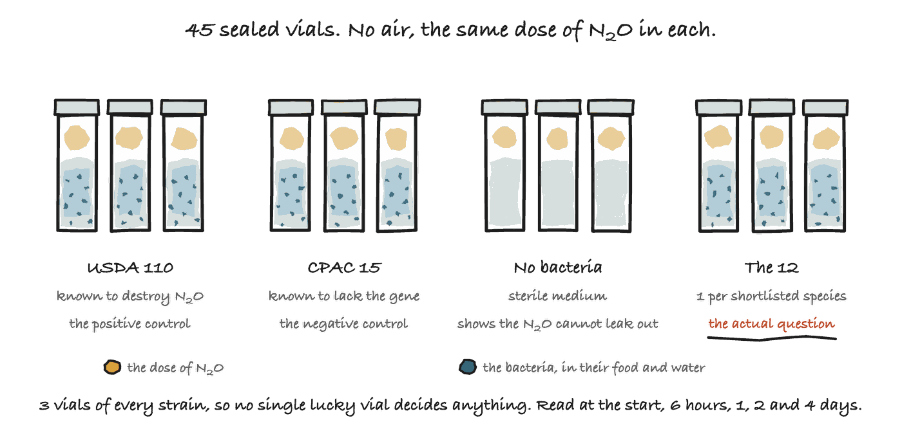

Experiment 1: find the N₂O destroyer
The search read 40 genomes and found 13 species carrying the gene. A gene being present is not the same as a gene working. This experiment is where the bench agrees with the gene finder or does not.
It is the cheapest experiment in the project, so it goes first. If one of them destroys N₂O and can also beat the bacteria already in the soil to the roots, nothing needs to be built at all. The answer is simply to change which strain goes in the bag.

In short
| The experiment | In 1 line |
|---|---|
| What we do | Seal each strain into a vial of liquid food with no air above it, inject the same dose of nitrous oxide into that space, and keep the vials at 28 degrees Celsius |
| What we measure | How much of the N₂O is left, on a gas chromatograph, at the start, then 6 hours, 1 day, 2 days and 4 days |
| What it tells us | Which shortlisted species actually destroy N₂O, rather than just carrying the gene for it |
| How long it takes | 3 weeks, once the strains are in hand. Only 4 days of that is the measurement |
What is in a vial
Each vial holds 10 mL of growth medium, which is water with mineral salts and something for the bacteria to eat, all from one batch so no vial is better fed than another. The bacteria live in that liquid. Above it is a sealed space of gas called the headspace, and that is where the nitrous oxide is injected and where it is measured.
The air is flushed out before sealing. With no oxygen to breathe, a bacterium that has the enzyme turns to the nitrous oxide instead, which is the whole thing being watched.
| Group | What is in it | Why it is here |
|---|---|---|
| 1 | B. diazoefficiens USDA 110 | The positive control. Known to destroy N₂O. If this one does nothing, the experiment is broken rather than the strain |
| 2 | B. japonicum CPAC 15 | The negative control. Known to lack the gene. Nothing should happen |
| 3 | Sterile medium, no bacteria | Shows the N₂O does not simply leak out of the vial |
| 4 to 15 | 1 per shortlisted species | The actual question |
3 vials of each, so no single lucky vial decides anything. The gene finder shortlisted 13 species, and 1 of them is USDA 110 itself, which already goes in as the positive control. That leaves 12 to test. 12 candidates plus 3 controls is 15 groups, and 15 times 3 is 45 vials. Each one is read 5 times, which is 225 readings on the gas chromatograph.
USDA 110 turning up on the shortlist is a check on the gene finder, not a 14th candidate. It is the strain already known to destroy N₂O, and the gene finder picked it out of 40 genomes without being told.
Groups 2 and 3 are what make this an experiment rather than a demonstration. Group 2 shows the method can tell a carrier from a non-carrier. Group 3 shows that N₂O disappearing means it was destroyed, rather than that it escaped.
The strains that go in the vials
The search gave every genome a score between 0 and 1. These 13 scored high.
CPAC 15 is the 14th, and it is here on purpose. It scored 0.287, far below the rest. If the vials show it destroying N₂O too, the test is wrong.
| # | Species | Score | Genome | |
|---|---|---|---|---|
| 1 | Bradyrhizobium guangdongense | 0.997 | GCA_002128415 |
|
| 2 | Bradyrhizobium forestalis | 0.996 | GCA_002795245 |
|
| 3 | Bradyrhizobium nanningense | 0.996 | GCA_004114535 |
|
| 4 | Bradyrhizobium nitroreducens | 0.996 | GCA_002776695 |
|
| 5 | Bradyrhizobium frederickii | 0.995 | GCA_004570865 |
|
| 6 | Bradyrhizobium neotropicale | 0.995 | GCA_001641695 |
|
| 7 | Bradyrhizobium diazoefficiens USDA 110 | 0.995 | GCA_000011365 |
The positive control. The search picked it out without being told |
| 8 | Bradyrhizobium ottawaense | 0.995 | GCA_002278135 |
|
| 9 | Bradyrhizobium shewense | 0.994 | GCA_900094605 |
|
| 10 | Bradyrhizobium stylosanthis | 0.994 | GCA_001641335 |
|
| 11 | Bradyrhizobium oligotrophicum S58 | 0.993 | GCA_000344805 |
|
| 12 | Bradyrhizobium lablabi | 0.992 | GCA_001440475 |
|
| 13 | Bradyrhizobium centrolobii | 0.990 | GCA_001641635 |
|
| 14 | Bradyrhizobium japonicum CPAC 15 | 0.287 | GCA_000661935 |
The negative control. Scored below the line, so nothing should happen |
Every accession is a genome anybody can download and run through the finder.
Why 3 weeks for a 4 day measurement
The bacteria are the slow part. Bradyrhizobium is a slow grower by definition. It takes 6 to 8 days to make a visible colony on a plate, and another 3 to 5 days to cloud up a tube of liquid. A common gut bacterium doubles every 20 minutes. These double every 6 to 48 hours.
| What happens | How long | |
|---|---|---|
| 1 | Revive the cultures and streak them out | about a week |
| 2 | Grow all 14 strains in liquid to the same cloudiness | about a week |
| 3 | Fill, flush, seal and inject 45 vials | a day |
| 4 | The experiment. 5 readings over 96 hours | 4 days |
None of that counts getting the strains. The request to a culture collection, and shipping, happens before the clock starts and can take months.
Getting hold of the strains
The USDA National Rhizobium Germplasm Resource Collection at Beltsville holds more than 5,000 rhizobia and sends cultures out free. That is where the request goes first.
Some of the 12 may not arrive. Several were first described in China and Brazil, and their type strains may sit only in collections that need international shipping and an import permit. So the shortlist is what gets asked for, not what gets tested. The write-up names which species arrived and which could not be obtained, and the experiment works with however many turn up. The 2 controls are both common soybean strains, and they are what make it an experiment.
What each outcome means
| If | Then |
|---|---|
| Several species clear the N₂O as fast as USDA 110 | Nothing needs engineering. Change which strain goes in the bag |
| The gene is there but the N₂O stays | The gene finder found DNA rather than ability, and the write-up has to say so |
| Nothing works, including the positive control | The method is wrong, not the biology. Fix the vials before believing anything |
What a lab would need to lend us
| What it needs | Detail |
|---|---|
| Bench space | An incubator shelf at 28 °C, and time on a gas chromatograph that reads nitrous oxide |
| Equipment | Anaerobic jars or a glovebag, sealed serum vials, cylinders of nitrous oxide and nitrogen |
| Biosafety | BSL-1. Soil rhizobia from culture collections. Nothing engineered, nothing pathogenic. Waste is autoclaved |
| How long | About 3 weeks, with a student on site twice a week to sample |
From us: the shortlist, the strain requests, the medium recipe, the blank data sheets and the analysis, all written already.
The paperwork
The numbers go on 2 blank sheets, and every column on them is defined in the codebook. Only things read off an instrument get written down. Percentages and averages are worked out afterwards, so the number they came from is never lost.
| Sheet | What goes on it |
|---|---|
vials.csv |
The register. Which strain is in which vial |
headspace.csv |
Nitrous oxide and cloudiness, at each of the 5 readings |
The analysis was written before any data existed, and it has already been run on invented numbers 3 times, including runs where the experiment fails.
| Dry run | What it pretends happened | What the analysis says |
|---|---|---|
several-work |
5 of the 13 clear the N₂O as fast as USDA 110 | Yes, and it names them |
gene-present-not-working |
Every shortlisted species carries the gene and the N₂O stays | No. The gene finder found DNA rather than ability |
method-broken |
Even the positive control does nothing | No strain can be judged. Fix the vials first |
None of these is evidence of anything. They are proof that the analysis tells the truth before there is any truth to tell.
Why this is worth doing even if it fails
Nobody has ever tested rhizobium strains for this. Whatever the answer is, it does not currently exist. A list of which soybean bacteria destroy N₂O and which do not is useful to the people who choose what goes in the bag, whatever happens to the rest of this project.